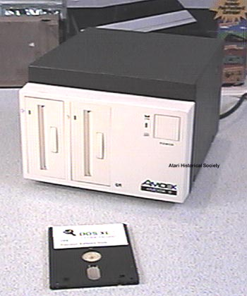
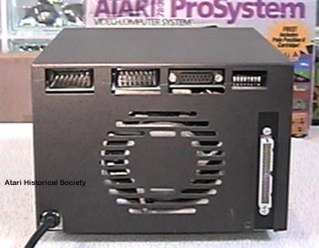

The Amdek Amdisk-III
3 1/4" Disk Drive

Amdek was better known for its high quality monochrome and color composite
monitors which were used by almost every computer user back in the 1970's
and 1980's. In 1983 Amdek began to sell a new line of 3 1/4"
hard shelled diskette drives for the Atari 8-bit line of computers.
They came packaged with OSS DOS XL.

They system came with two 360K disk drive mechanisms and on the rear of
the drive box was a built in power supply, cooling fan for the power and
drives as well as 2 SIO connectors to allow diasy chaining of additional
peripherals as well as an Atari 850 compatible printer interface and a
slave-drive connector to add on 2 additional drives.
Although an expensive option at the time the Amdisk system was well worth
it because it packed so much storage and features into one clean simple
box. Amdek's 3 1/4" design did not become a standard
but instead was superseeded by the 3 1/2" micro floppy standard used worldwide
today.
Atari, Inc had plans
of its own to sell a 3 1/2" disk drive called the Atari 1055, it was developed
at Atari's northern California lab in conjunction with Seagate/Shugart.
The disk drive was never sold, several pilot run units exist.
Atari, Corp had developed
the XF351 disk drive which was a 3 1/2" disk drive for the XE line of Atari
8-bit computers, this too only made it into the pilot run stage and was
never sold to the public, instead Atari Corp released the XF551 5 1/4"
disk drive for the XE's to replace the Atari 1050 disk drive.